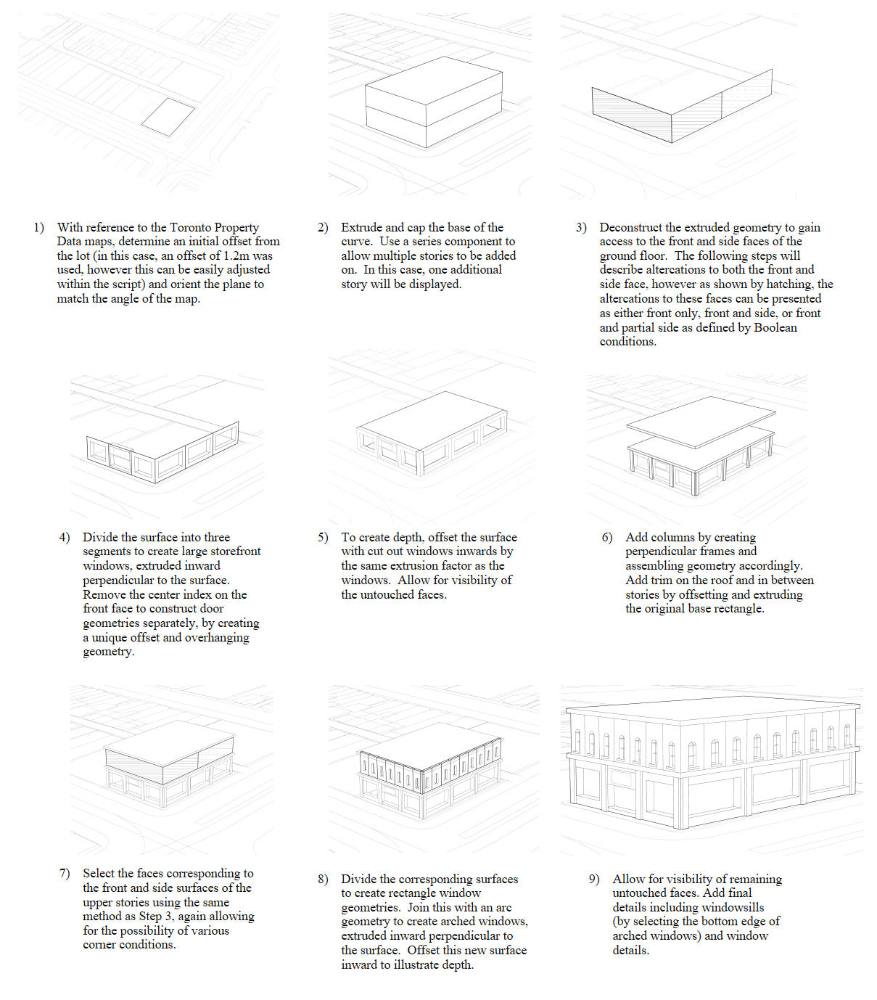

Projects
Exploring parametric modeling, environmental optimization, and data-driven urban systems.
Breakwater Pavilion
Collaborated as an interdisciplinary lead coordinating a joint team of three structural engineering students and three architecture students to develop a rigorous waterfront pavilion proposal for an external client. The scope required a multi-faceted evaluation of complex coastal site constraints, environmental microclimates, structural load paths, and zoning bylaws. Utilizing advanced spatial analysis tools alongside traditional iterative sketching, the team produced a cohesive structural scheme balancing programmatic feasibility with contextual sensitivity.
Parametric Development of Typology
This research-driven design investigation examines the structural and spatial replicability of a mixed-use commercial Edwardian typology indigenous to Toronto. Initial baseline documentation was established through a precise 3D digital model built in Rhino 3D, detailing structural bays, fenestration rhythms, and programmatic footprints. This geometry was subsequently translated into a fully associative Grasshopper definition, establishing parametric controls for variable corner conditions, site setbacks, and height limitations. By testing algorithmic variations across diverse simulated urban parcels, the project evaluates how historic building skins can be systematically adapted to modern densification demands without sacrificing architectural integrity.


Typological Development Diagram.png) Parametric Massing Iterations
Parametric Massing Iterations
Optimizing Vegetation Presence in Toronto
Expanding upon the urban micro-climatic performance of mixed-use typologies, this project proposes an algorithmic architectural intervention aimed at maximizing building-integrated vegetation and urban biodiversity. Operating within a computational design framework, a responsive facade system was developed to compute optimal placement matrices for vertical planting modules based on solar radiation angles and seasonal surface normal vectors. The resulting kinematic assembly dynamically adapts throughout the annual solar cycle: modular plant bays transition into protective glass enclosures during harsh winter months to maintain core growing temperatures, while rotating outward by 45 degrees during transitional shoulder seasons to capture maximum solar exposure and passive thermal gain.
.png) Facade System Step-by-Step Development
Facade System Step-by-Step Development
.png) Seasonal Solar Performance Outputs
Seasonal Solar Performance Outputs